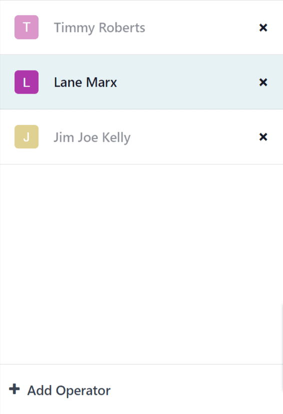

Información general de Taller¶
Taller es un módulo complementario de la aplicación Fabricación que proporciona una interfaz visual para procesar órdenes de fabricación y de trabajo. Además, permite que los empleados puedan llevar seguimiento del tiempo que utilizan en estas órdenes.
El módulo Taller se instala con la aplicación Fabricación y no se puede instalar por separado. Si desea instalar la aplicación Fabricación vaya a , escriba fabricación en la barra de búsqueda y haga clic en Instalar en la tarjeta de la aplicación Fabricación.
Importante
El módulo Taller reemplaza la función de vista de tableta de la aplicación Fabricación y solo está disponible desde la versión 16.4 y posteriores.
Si desea verificar el número de versión de una base de datos de Odoo, vaya a y diríjase a la sección Acerca de ubicada en la parte inferior de la página, ahí aparece la versión correspondiente.
Consulte la documentación sobre la actualización de una base de datos para comenzar a usar una versión más reciente de Odoo.
Página «todos»¶
De forma predeterminada, la página todos muestra una tarjeta de información para cada orden de fabricación que está lista para comenzar. Se considera que una orden de fabricación está lista para comenzar una vez que se ha confirmado y todos los componentes requeridos están disponibles.
Si desea ver cada orden de fabricación confirmada sin importar su estado, haga clic en el botón x en el filtro listo para comenzar para eliminarlo de la barra buscar…
Tarjeta de información de la orden de fabricación¶
La tarjeta de información de la orden de fabricación en la página todos muestra toda la información relevante de la orden de fabricación asociada y proporciona opciones a los empleados para procesar la orden de fabricación.
El encabezado de la tarjeta de una orden de fabricación muestra el número de la orden, el producto, el estado y el número de unidades que se están produciendo. Si aún no ha comenzado el trabajo en la orden de fabricación, el estado será confirmado. Una vez que el trabajo ha comenzado, el estado se actualiza a en progreso. Si se han completado todas las órdenes de trabajo para la orden de fabricación, esto quiere decir que está lista para cerrarse y el estado se actualizará a por cerrar.
El cuerpo principal de una tarjeta de orden de fabricación muestra una línea por cada orden de trabajo completada, si las hay, seguida de la orden de trabajo a completar. Las órdenes de trabajo completadas se distinguen por una marca de verificación verde a la derecha del título de la orden de trabajo. La orden de trabajo actual se indica con un botón que abre la página del centro de trabajo al que se asigna la orden.
Después podrá ver una línea titulada registrar producción que se utiliza para registrar el número de unidades de producto producidas. Si desea ingresar manualmente el número de unidades producidas, haga clic en la línea registrar producción, ingrese un valor en el campo unidades de la ventana emergente resultante y luego haga clic en validar.
También puede hacer clic en el botón # unidades en el lado derecho de la línea, que automáticamente registra el número de unidades para las que se creó la orden de fabricación como el número de unidades producidas. Por ejemplo, si se crea una orden para 10 unidades de una mesa de comedor, al hacer clic en el botón 10 unidades se registra que se produjeron 10 unidades.
El pie de página de la tarjeta de la orden de fabricación muestra el botón cerrar producción. Esto se utiliza para cerrar la orden de fabricación una vez que termine la producción. Sin embargo, si se requieren controles de calidad para la misma orden de fabricación (no para las órdenes de trabajo dentro de ella), aparecerá un botón controles de calidad; al hacer clic se abrirá una ventana emergente desde la cual se pueden completar los controles de calidad necesarios.
Después de hacer clic en cerrar producción, la tarjeta de la orden de fabricación comienza a desvanecerse y aparece el botón deshacer en el pie de página. Si hace clic en deshacer, la orden de fabricación permanecerá abierta. Una vez que la tarjeta de la orden de fabricación desaparece por completo, se cerrará la orden de trabajo.
En el lado derecho del pie de página verá el botón ⋮ (opciones), que abre una ventana emergente con opciones adicionales para la orden de fabricación:
Desechar se utiliza para enviar componentes a una ubicación de desecho cuando se detecta que presentan fallas.
Agregar orden de trabajo se utiliza para agregar una orden de trabajo adicional a una orden de fabricación.
Agregar componente se utiliza para agregar un componente adicional a la orden de fabricación.
Abra la orden de fabricación en la aplicación Fabricación.

Páginas de los centros de trabajo¶
De forma predeterminada, la página de cada puesto de trabajo muestra una tarjeta de información para cada orden de trabajo asignada a él que esté lista para comenzar. Una orden de trabajo se considera lista para comenzar una vez que la orden de fabricación de la que forma parte esté lista para comenzar y se hayan completado todas las órdenes de trabajo anteriores.
Para ver todas las órdenes de trabajo confirmadas que se asignaron a un centro de trabajo sin importar el nivel de preparación, haga clic en el botón x que se encuentra en el filtro Orden de fabricación lista para quitarlo de la barra de búsqueda.
Panel de información de la orden de trabajo¶
Un panel de información de una orden de trabajo en la página de un centro de trabajo muestra todos los detalles importantes de la orden de trabajo asociada. Aquí, los empleados podrán encontrar opciones para el procesamiento de la orden de trabajo.
El encabezado de la tarjeta de la orden de trabajo muestra el número de referencia de la orden de fabricación de la que forma parte, el producto, el número de unidades que se producirán y el estado. Si esta orden de trabajo está pendiente, su estado aparecerá como Por hacer. Una vez que empiece a trabajar en esta orden, el estado se actualizará y aparecerá un temporizador en el que podrá ver el tiempo total que ha trabajado en esta orden de trabajo.
El contenido principal de la tarjeta de una orden de trabajo corresponde a una línea por cada paso necesario para completar la orden de trabajo. Para completar los pasos de la orden de trabajo haga clic en la línea y siga las instrucciones que aparecen en la ventana emergente. También puede hacer clic en la casilla ubicada junto a cada línea para marcar el paso como completado de manera automática.
Abajo del último paso de cada orden de trabajo podrá encontrar una línea titulada Registrar producción, que tiene la misma función que la línea Registrar producción que se encuentra en el panel de una |orden de fabricación|. Si registra el número de unidades producidas con la línea Registrar producción en el panel de la orden de trabajo también se completará el paso asociado con el panel de la |orden de fabricación|.
Si la orden de trabajo que se está procesando es la última orden de trabajo para la |orden de fabricación|, aparecerá un botón al final de la orden de trabajo para Cerrar producción. Al hacer clic en este botón se cerrará tanto la orden de trabajo como la |orden de fabricación|, a no se que se requiera un control de calidad para la |orden de fabricación|. En este caso, primero debe de completar el control de calidad del panel de la |orden de fabricación| antes de poder cerrarla.
Si la |orden de fabricación| requiere que se completen más órdenes de trabajo, en su lugar aparecerá un el botón Marcar como hecho. Al hacer clic en este botón, se marcará la orden de trabajo actual como completada y la siguiente orden de trabajo aparecerá en la página del centro de trabajo a la que se asignó.
Después de hacer clic en Cerrar producción o Marcar como hecho, el panel de la orden de trabajo comenzará a desaparecer poco a poco, y aparecerá el botón Deshacer. Si hace clic en este botón, la orden de trabajo se mantendrá abierta. Una vez que el panel de la orden de trabajo desaparezca por completo, se marcará como Terminado en la |orden de fabricación|.
En la parte inferior derecha de la orden de trabajo podrá encontrar el botón ⋮ (opciones), con el cual se abrirá una ventana emergente con opciones adicionales para la orden de trabajo:
Desechar se utiliza para enviar componentes a una ubicación de desecho cuando se detecta que presentan fallas.
Agregar componente se utiliza para agregar un componente adicional a la orden de fabricación.
Mover a un centro de trabajo se usa para transferir la orden de trabajo a un centro de trabajo diferente.
Sugerir una mejora de hoja de trabajo permite que el usuario proponga un cambio a las instrucciones o los pasos de la orden de trabajo.
Crear una alerta de calidad provocará que se abra un formulario de alerta de calidad que se puede llenar para alertar al equipo de control de calidad sobre un problema potencial.

Panel de operador¶
El panel de operador se usa para gestionar a los empleados que iniciaron sesión en el módulo Taller. El panel muestra el nombre y la foto de perfil de cada empleado que ha iniciado sesión en cada instancia de la base de datos.
Para interactuar con el Taller como un usuario en específico, haga clic en el nombre del empleado para activar su perfil. Los perfiles que no estén activos aparecerán con sus nombres y fotos de perfiles en gris
Cuando se selecciona un empleado en el panel de operador, solo tendrá que hacer clic en el encabezado de la orden de trabajo para empezar a trabajar en ella. Si un empleado está trabajando en una o más órdenes de trabajo, el o los títulos de estas órdenes de trabajo aparecerán debajo de su nombre. También aparecerá un reloj en el que se mostrará el tiempo que han trabajado en cada orden.
Para agregar un empleado nuevo al panel de operador, haga clic en + Agregar operador en la parte inferior del panel. Después, en la ventana emergente Seleccionar empleado seleccione un empleado.
Para quitar a un empleado del panel de operadores, solo haga clic en el botón x que aparece junto a su nombre en el panel.
